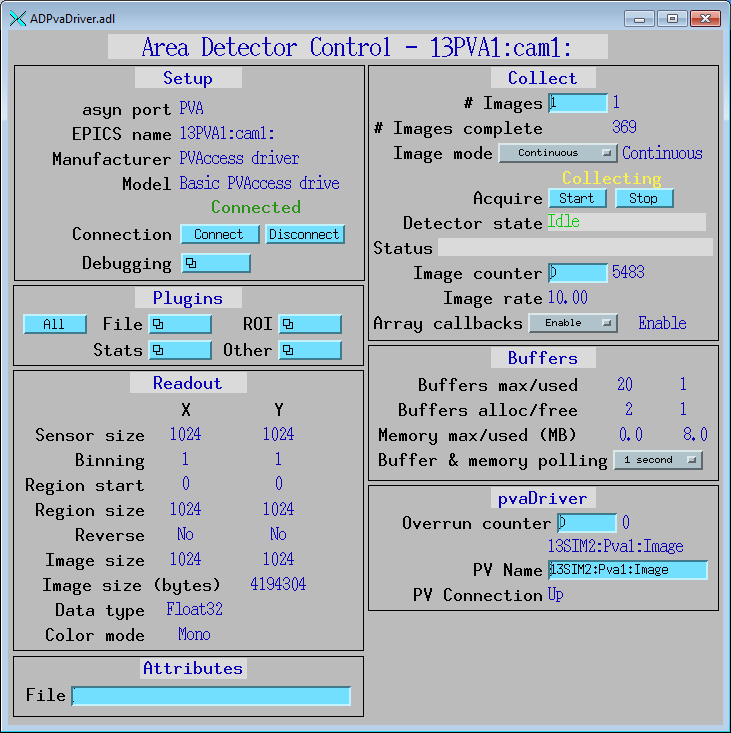

pvaDriver
An areaDetector pvAccess driver
- author:
Bruno Martins, Brookhaven National Laboratory
Introduction
This is an areaDetector driver for importing an EPICSv4 NTNDArray via pvAccess into areaDetector. It does so by creating a monitor on the specified PV.
This driver inherits from ADDriver. It implements some of the parameters in asynNDArrayDriver.h and in ADArrayDriver.h, namely:
ADManufacturer
ADModel
ADAcquire
ADImageMode
ADNumImages
ADMaxSizeX and ADMaxSizeY
ADMinX and ADMinY
ADBinX and ADBinY
ADReverseX and ADReverseY
ADSizeX and ADSizeY
ADNumImagesCounter
NDArraySize, NDArraySizeX and NDArraySizeY
NDDataType and NDColorMode
NDArrayCounter
It also implements a few parameters that are specific to the pvAccess driver.
pvAccess driver specific parameters
The pvAccess driver-specific parameters are the following:
Parameter Definitions in pvaDriver.cpp and EPICS Record Definitions in pvaDriver.template |
||
|---|---|---|
Description |
EPICS record name |
EPICS record type |
Number of overruns occurred |
$(P)$(R)OverrunCounter, $(P)$(R)OverrunCounter_RBV |
longout, longin |
Name of the PV to monitor. This can be changed a run-time. |
$(P)$(R)PvName, $(P)$(R)PvName_RBV |
waveform, waveform |
Status of the connection to the server |
$(P)$(R)PvConnection_RBV |
bi |
Configuration
The pvaDriver driver is created with the pvaDriverConfig command, either from C/C++ or from the EPICS IOC shell.
int pvaDriverConfig(const char *portName, const char *pvName,
int maxSizeX, int maxSizeY, int dataType,
int maxBuffers, size_t maxMemory,
int priority, int stackSize)
The pvaDriver-specific fields in this command are:
pvNameName of the PV to be monitored.
For details on the meaning of the other parameters to this function refer to the detailed documentation on the pvaDriverConfig function in the pvaDriver.cpp documentation and in the documentation for the constructor for the pvaDriver class.
Example st.cmd startup file
There is an example IOC boot directory and startup script provided with pvaDriver: Example st.cmd Startup File.
MEDM screens
The MEDM screen for the pvaDriver is shown below.
